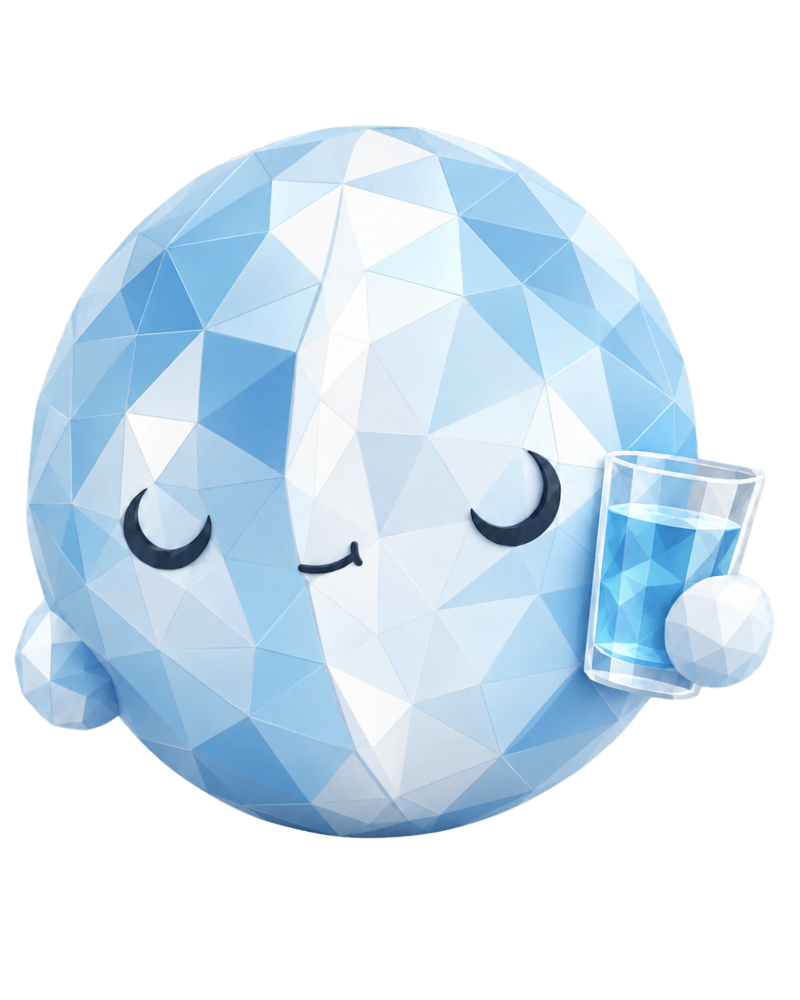
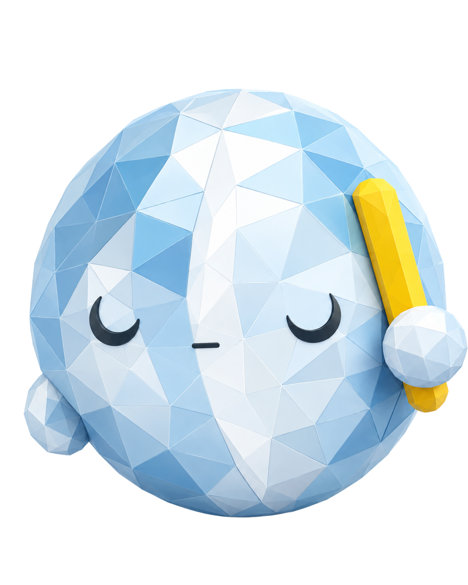
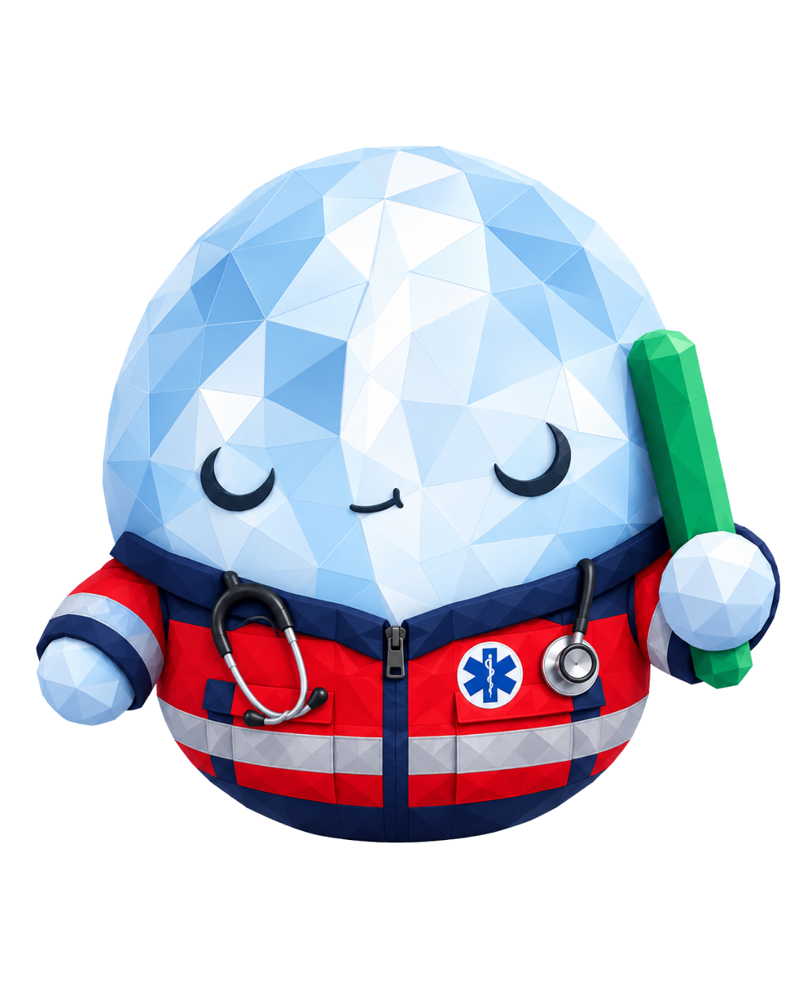
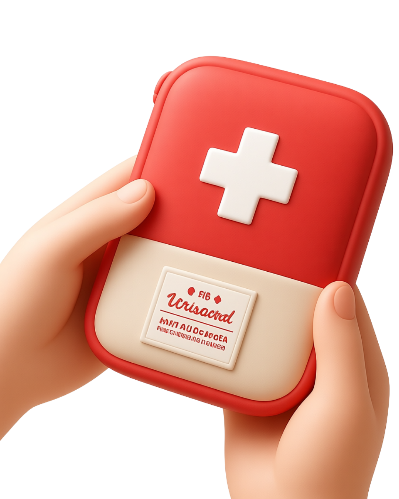

0 de 0 listos
MediCore · Conoce a Mol
Tu salud,
simple.
Medicamentos, IMC y orientación de síntomas en un solo lugar, con Mol a tu lado para guiarte en cada paso.
Orientación médica preventiva inmediata
Más de 50 medicamentos detallados con posología y advertencias
Mol dice
¡Hola! Estoy aquí para ayudarte con tu salud. ¿Cómo te sientes hoy?
Orientación clínica preventiva
•
Catálogo con +50 medicamentos
•
Cálculo de IMC al instante
•
100% Gratuito y confiable
Módulos Principales
Todo lo que necesitas para cuidarte
Herramientas simples y directas diseñadas para darte tranquilidad y respuestas médicas confiables.
Catálogo Farmacéutico
Medicamentos
Consulta indicaciones, posología y precauciones clave. Toca cualquier medicamento para ver detalles completos.
Nutrición y Salud
Tu Índice de Masa Corporal
Conoce tu estado nutricional en segundos y recibe recomendaciones preventivas adaptadas por Mol.
Ingresa tus datos
Mol está listo
Ingresa tu peso y altura en el formulario para obtener tu análisis de IMC en tiempo real.
Resultado del Cálculo
Bajo
Normal
Sobrepeso
Obesidad
Resolución 3803 de 2016 (RIEN) & IDEAM
Agua por día: Tu hidratación inteligente
Calcula tu ingesta diaria de líquidos de referencia según tu edad, nivel de actividad física y el clima habitual de tu ciudad.
Tus datos de hidratación
Basado en las recomendaciones poblacionales del Ministerio de Salud

Mol te acompaña a hidratarte
Completa tus datos en el formulario para obtener tu objetivo de líquidos en litros y vasos, junto con la influencia del clima de tu ciudad.
Objetivo de Bebidas Diarias
2,2 L
≈ 9 vasos al día
Referencia RIEN: Mujeres, 19 años o más
Agua total diaria: 2,7 L. El cuerpo obtiene aproximadamente el 80% (2,2 L) mediante bebidas directas y el 20% restante de los alimentos.
Atención: Restricción médica indicada
Si padeces enfermedad renal, insuficiencia cardíaca o tienes restricción estricta de líquidos prescrita por tu médico, esa necesidad individual debe prevalecer. No aumentes tu ingesta automáticamente por calor o ejercicio sin consultar a tu especialista.

Mol dice
¡Bebe agua a pequeños sorbos a lo largo del día!
Rastreador de Vasos de Hoy (250 ml)
Toca cada vaso a medida que lo tomes
Fisiología y Beneficios
¿Por qué beber agua es necesario y beneficioso?
Funciones vitales descritas por MedlinePlus (Biblioteca Nacional de Medicina de EE. UU.) y el impacto en tu bienestar diario.
Autoevaluación Visual
¿Qué puede ocurrir si no bebes suficiente agua?
Los primeros signos de alerta son sed, boca seca, cansancio, dolor de cabeza o mareos. Puedes evaluar tu nivel de hidratación observando el color de tu orina:
Hábitos Diarios
Pautas prácticas para mantenerte hidratado
Botella reutilizable
Lleva una botella de agua siempre contigo y bebe pequeños sorbos regulares a lo largo del día.
Bebe con las comidas
Acompaña tus comidas con agua y presta atención a los primeros avisos de sed antes de sentirte deshidratado.
Atención en calor y deporte
Aumenta la frecuencia de ingesta si estás en ciudades calurosas o si realizas actividad física intensa.
Prioriza agua pura
Prefiere agua natural, caldos e infusiones frente a gaseosas y bebidas ultraprocesadas con exceso de azúcar.
Documentación Oficial
Fuentes y Referencias de la Función de Hidratación
Minsalud Colombia — Resolución 3803 de 2016
Recomendaciones de Ingesta de Energía y Nutrientes (RIEN) para la población colombiana.
Consultar Minsalud ↗MedlinePlus — Agua en la dieta
Biblioteca Nacional de Medicina de EE. UU.: funciones celulares, digestión y requerimientos.
Consultar MedlinePlus ↗IDEAM — Normales Climatológicas 1991–2020
Referencia oficial de promedios de temperatura de ciudades y municipios de Colombia.
Consultar IDEAM ↗ICBF — Importancia de la Hidratación
Guías alimentarias basadas en alimentos para la población colombiana.
Consultar ICBF ↗
Orientación de Síntomas
Me siento mal
Indica tus síntomas para recibir un análisis de orientación clínica y saber qué medidas preventivas tomar.
Selecciona todos los síntomas que experimentas hoy
Dime tus síntomas, te ayudaremos a que te sientas mejor.

Prepárate
Herramientas preventivas, contingencias de salud y guías clínicas para mantenerte listo ante cualquier situación.
🌦️
Alertas por Temporada
Prevención de picos de gripe, polen estacional y olas de calor o frío (en desarrollo).
🎒
Botiquín Esencial ¡Ya disponible!
Guías para armar, organizar y revisar botiquines seguros según tu actividad con Mol Paramédico.
Abrir módulo de botiquín →
MediCore · Botiquín Esencial
Guía para preparar, organizar y transportar botiquines seguros
Un botiquín debe adaptarse a tu entorno real, la duración de la actividad y las personas a tu cargo. Aprende qué llevar, cómo conservarlo y qué precauciones seguir con la supervisión de Mol Paramédico.

Situaciones y Contextos
Selecciona una pestaña para ver la recomendación específica
Elige tu actividad para adaptar el kit

4 Situaciones que requieren atención urgente
Pautas claras basadas en el protocolo de la Cruz Roja y el Ministerio de Salud
Sangrado Abundante
Si el sangrado no cede tras 5–10 minutos de presión directa continua con gasas estériles, o si brota en pulsos, mantén la presión sin retirar los apósitos empapados (coloca más encima) y traslada de urgencia.
Dificultad Respiratoria
Sensación de asfixia, labios o uñas azuladas, respiración ruidosa o hinchazón súbita en rostro o lengua (signos de reacción anafiláctica grave). Requiere atención médica inmediata.
Pérdida de Conciencia
Desmayos que no se recuperan en segundos, convulsiones, desorientación severa, traumatismos craneales fuertes o falta de respuesta al estímulo verbal. Proteger la cabeza y pedir ayuda.
Emergencias por Calor
Confusión, piel caliente y enrojecida sin sudor, desmayo o náuseas severas tras ejercicio o sol intenso. No basta con ofrecer agua o suero: puede tratarse de un golpe de calor potencialmente mortal.
Aclaraciones Médicas y Prácticas Incorrectas
❌ ¿Alcohol o agua oxigenada dentro de heridas abiertas?
NO como regla universal: El alcohol y el agua oxigenada destruyen células sanas que participan en la cicatrización e irritan tejidos vivos. La recomendación médica institucional es lavar con solución salina estéril o agua potable limpia y jabón neutro suave.
❌ ¿Antibióticos automedicados en el botiquín?
NO deben incluirse para uso libre: Los antibióticos, corticoides y medicamentos para dormir no deben tomarse de forma automática. Su prescripción debe ser individualizada por un médico para evitar resistencias bacterianas o efectos secundarios graves.
❌ ¿Retirar objetos clavados profundamente?
NUNCA extraerlos en el campo: Las pinzas del botiquín son exclusivamente para astillas o espinas superficiales. Un objeto incrustado profundamente puede estar taponando una arteria; extraerlo puede provocar una hemorragia incontrolable. Inmovilízalo y traslada al paciente.
Buenas Prácticas
Organización y Conservación Segura
6 Pilares institucionales para mantener tus suministros en óptimo estado
Estuche Adecuado
Recipiente resistente, limpio, fácil de abrir y hermético contra polvo y humedad. En senderismo, preferir bolsas impermeables (dry-bags).
Temperatura y Humedad
Guardar según la etiqueta. La guantera de un auto al sol o un baño húmedo pueden alterar y degradar químicamente los medicamentos.
Revisión Periódica
Revisar mensualmente y antes de cada viaje o actividad importante. Reponer lo usado y retirar de inmediato elementos caducados.
Inventario y Prospecto
Conservar siempre los medicamentos en su envase o blíster original con lote, prospecto y fecha de caducidad visibles.
Prevención de Intoxicaciones
En el hogar, mantener fuera del alcance y la vista de niños y mascotas, idealmente en lugar alto y bajo llave.
Ubicación Conocida
Informa a tus convivientes o compañeros de trabajo dónde está el botiquín y quiénes están capacitados para brindar apoyo.
Evidencia Clínica
Fuentes Médicas e Institucionales
Este contenido sintetiza lineamientos de organizaciones de referencia internacional y nacional:
MedlinePlus (Biblioteca Nacional de EE.UU.)
Guías para botiquín de primeros auxilios, almacenamiento seguro y medicamentos de venta libre.
Visitar MedlinePlus ↗Cruz Roja Americana (American Red Cross)
Anatomy of a First Aid Kit, Travel First Aid Kit Essentials y listas de senderismo.
Visitar American Red Cross ↗CDC (Centers for Disease Control and Prevention)
Travel Health Kits: personalización de botiquines según destino, clima y riesgos epidemiológicos.
Visitar CDC ↗Ministerio de Salud de Colombia
Guías de atención prehospitalaria y articulación con el Sistema de Emergencias Médicas (Línea 123).
Visitar Minsalud Colombia ↗Aviso institucional: Esta guía ofrece información general de preparación y primeros auxilios. No sustituye la evaluación médica profesional, la formación práctica certificada ni las normas de seguridad laboral aplicables a botiquines institucionales o industriales.